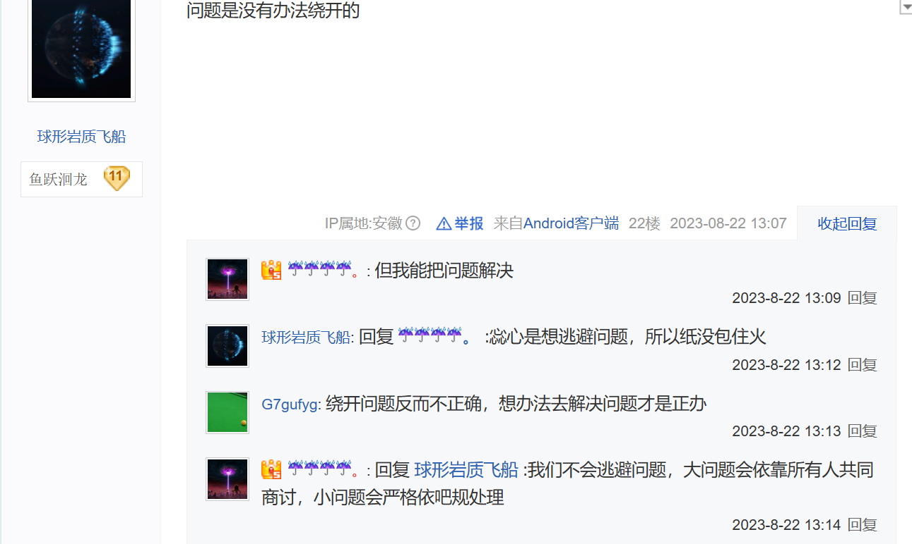

碰瓷王·熊吧
| 反动贴吧简介 | ||||||||||||||||||||
|---|---|---|---|---|---|---|---|---|---|---|---|---|---|---|---|---|---|---|---|---|
现在是一个由恶俗反动组织管理的贴吧，成员多有抽象且幼稚的“熊痴”。吧友自称“熊迷”、“不二熊”。 熊痴常常去其他贴吧爆吧，且经常碰瓷，辱骂其他动画不如熊出没，还总是跑到哔哩哔哩，微博等平台攻击其他国漫的粉丝并将其截图挂到熊出没吧。 现在已经发展成为国漫恶俗网友集中的地方，都是底层恶俗蛤蟆。
起源2013年9月24日，，一位无辜网友leowqo因为不当言行，遭受了熊出没吧的人肉，以所谓的“官方工作人员”笨熊苹果带头，以迫害leowqo为主。然而当时熊出没吧遭到了新兴而起来的反熊组织的骚扰，因此熊出没吧转为以炒作恶搞反熊人士及其他国漫粉丝为主，在这时辱骂——人肉——炒作的传统就已经确立。 这时期的熊出没吧非常恶俗，几天就会有一个新的被迫害对象，随着早期熊痴的宣传下，贴吧创作数量有所增加。 对外战争完成了恶俗化以后，熊痴为了发泄自己多余的精力，开始了大规模的占吧爆吧等对外战争活动，为了对付反熊组织，便挂着反熊的名义四处爆吧钓鱼，故意激怒其他圈子的动漫爱好者，在这之前熊痴和跟风者就在多个贴吧进行钓鱼取乐活动，由于熊痴混动漫圈较早看的动漫比较多，也擅长网络话术，所以一时之间所向披靡。正巧2014年网传烤羊事件事发，熊痴抓住时机以维护贴吧秩序守护国漫尊严的名义四处破坏，当年喜羊羊与灰太狼圈子也因此遭受到重创。
画师事件这是一场恶臭的恶俗内斗。站在最适合圈外人的视角，其实就是两个腐女画师，她们画熊出没的男同耽美同人，平时看不起熊吧其他人，因为某些事情在吧里骂人，一开始后英杰，滕狗等腐朽人员支持画师骂人，后来因为原熊出没吧吧主惢心对此事处理不公，画师再次闹大，于是后英杰等人光速和她们切割。 总之，惢心是无能的统治者，在此事中只能让事态越来越差，腐朽势力是幕后黑手(类似袁绍提议召董卓入京)，目的是在暗中利用各种动乱冲击惢心统治，让惢心失去民心，时机到了就逼惢心下台，自己站出来驱逐弃子，认领功劳，然后上位。  《商讨指一言堂，吧规为独裁者剥削背书，解决指解决提出问题的人》 裂变衰落熊出没吧则一直以来都跟网络暴力走的极近，为了战胜那些对他们不满意的人，熊出没吧早期都会通过翻发言记录简单人肉对方，常常使用喷系的词汇辱骂所谓的“反熊”，“熊黑”，尽管这个时期并没有那么突破下限的想象力，也没有开人全家户籍的能力，更没有严明的组织性，小团体掌权，分工明确。 2023年8月16日，原熊出没吧吧主惢心下台，而由巴结官方工作人员上位的诈骗勒索网络暴力的联合——腐朽集团主导了局势，并吸收前惢心集团流出的成员。 可能是这些腐朽人长期受到社会歧视导致其心理扭曲，他们自嗨的绘图形象都不忍直视，嫉妒之下，开始利用孝子的力量对反对他们粗制滥造的人进行了恶俗攻击，甚至造谣无辜吧友援交卖淫，人肉出名字迫害，还自认是正义无比的行为。 随着腐朽集团的高速崛起，惢心集团随着惢心的吧主下台，其影响力一落千丈。 受害者叙述你好 我是一位受害者，之前还想和您联系，但是因为学业繁忙无暇顾及，今天来和诉说熊出没吧的反动狗的恶行。 在2023年，我还是一位普通的熊迷，经常在贴吧发贴和其他爱好者交流动漫，有天突然被疯狂@，点开一看——小博（就是熊吧那个贾府）带人在吧里开帖骂我，说我“引战”“搞分裂”，还给我扣“反吧卧底”的帽子。一群人复制粘贴刷屏，骂得我全家不得安宁。后来才知道，小博是受腐朽势力指使的，故意演这出戏，让我被围攻时幽酱“挺身而出”帮我说话。结果我真信了幽酱和后英杰那帮人，还到处说“雨哥他们是好人，他们能够复兴熊吧”这种蠢话……现在想想，他们就是一伙的！ 后来惢心下台，双叶妍那帮人突然把枪口对准我。腐朽势力在背后带节奏，说“都怪我到处惹事才招来敌人”，熊吧不少人也信了，骂我“害群之马”。可明明是他们自己搞内斗，却让我背锅！那段时间我连发个表情包都被截图骂“阴阳怪气”，群里刷屏叫我“滚出贴吧”。 最恶心的是吧务组换届。幽酱哄骗我主动退出竞选。结果随风立马把我列成人肉目标，几天后我QQ、手机号、学校全被挂到群里，还有人发我家庭住址威胁！接着更绝的来了——我之前约的稿子（画熊出没同人图），钱付了，画手突然消失。后来才知道是腐朽势力吞了我的钱，还嘲讽我“人傻钱多”。 我想过报警，但当时年纪还小，根本不懂怎么收集证据。又怕事闹大被报复，只能认栽退群退网。结果那帮人变本加厉，进我的亲友群挑拨离间…… 这帮人为了彻底毁掉我，连我家人都不放过！他们说我父亲是“赌徒”，还编造他“被母亲用钢尺家暴”“喝过尿”这种离谱到极点的黑料。我们一家这辈子正直本分，现在却因为我的事被泼满身脏水！他得知这些谣言后气得住院，而我妈哭着问我：“网上那些人为什么这么狠？” 路人眼里的我：“成天撕逼的疯狗”； 吧友认定的我：“编造谣言的毒瘤”； 敌人眼中的我：“首恶分子必须除掉”； 直到我被人肉的时候，我才发现——所有“黑料”都是他们逼我亲手制造的！ 我不知道是不是有人记录了我的个人信息，恶意假扮我，可我没有办法，只能任他们辱骂。 关于约稿诈骗的事情，我本可以去公安局报警。但是因为我本人年龄较小，还不会用法律的武器去维护自己的合法权益，而选择和反动狗和诈骗犯们和解了事，选择了避让隐忍，也就导致诈骗犯们把我当成“优质乐子”，疯狂拿来取乐，有的人甚至利用我的社会关系进入和我有关的QQ群进行辱骂，也导致我和很多人的关系被这些恶俗反动的人挑拨，这件事我也有错，相信了他们的挑拨离间。 他们先把我变成“疯子”，再以“清理疯子”之名毁灭我——而全网都成了他们的帮凶。如今我已考上大学，但每次看到键盘都会发抖。求你们彻查这群人：他们毁人不只为取乐，更是一条用“社死”榨取利益的黑色产业链！ 平日里学业繁忙，只能在暑假的空余时间来和贵站交涉，时间已经过去了两年，沧海桑田，我的百度账户已经丢失，有些证据早已无处可寻，但是我为我说的每一句话负责，希望贵站可以通过我的许可，谢谢。 鄙人区区不才，在当初被迫害时写的打油诗，因为那时候还小，写的不成样子，各位赏脸看看，这就是我那时悲愤之心的写照。 记熊吧革命 一心为国苦作臣，落得一身贼骂名。 高官俸禄把酒欢，老臣枷锁游街示。 众叛亲离官批斗，命虽活之心已死。 不望有日能平反，只愿清名在人间。
他们给我戴上手铐，却让全世界以为那是我自己打造的镣铐。 ——后记 点评熊吧百度百科的自我介绍中充满着浓浓的央视粗制滥造电影简介的风格，尤其可以参考差评百出的《新大头儿子和小头爸爸》的3D电影简介和《棉花糖和云朵妈妈》的电影简介，可以看出文字风格如出一辙。 这类在简介中的写法本质上是一种生硬的悬念预设与逻辑偷懒，其失败之处不仅在于暴露答案，更暴露了创作者在叙事策略和读者心理理解上的双重失误。 了解熊吧的人都非常清楚，从熊吧一开始，对国内乃至国外的二次元团体有着莫名奇妙的优越感，时时刻刻都想显得自己高人一等。 考虑到熊痴的身份，以及其与恶俗近乎父子的关系，这一切都不难理解了，因为他们就是一群只有负面贡献的圈内蛀虫，如果让强盗去评价受害者的话，强盗会有一万个理由来证明受害者是多么的垃圾。 | ||||||||||||||||||||